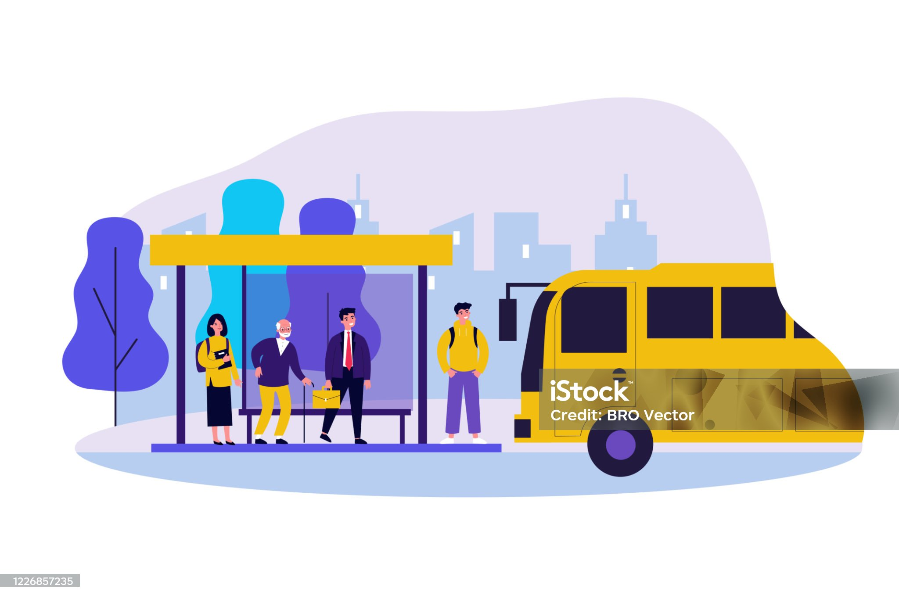

Usually (≈ 80%)
El adverbio usually se usa para expresar acciones que ocurren la mayoría de las veces, aunque no siempre.
El adverbio usually se usa para expresar acciones que ocurren la mayoría de las veces, aunque no siempre.
|
- He usually takes the bus to school. (Él usualmente toma el bus para ir a la escuela). |
|
- We usually eat lunch at 1 p.m. (Usualmente almorzamos a la 1 p.m.). |
|
- My father usually drinks coffee in the morning. (Mi padre usualmente toma café en la mañana). |

De uso gratuito bajo la Licencia de contenido de istockphoto
Instrucción:
Completa las frases arrastrando o escribiendo el adverbio correcto en el espacio en blanco.
Creative Commons Atribución-NoComercial-CompartirIgual (CC BY-NC-SA)